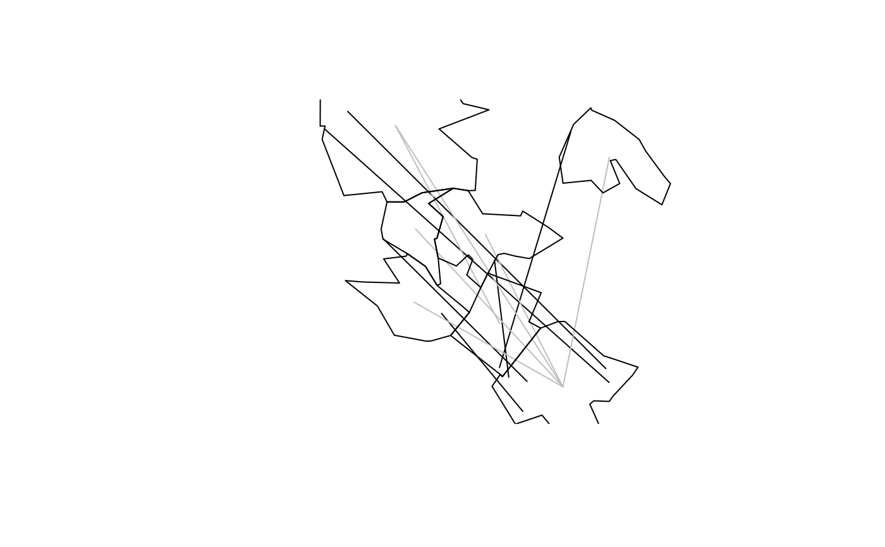

R/od-funs.R
od_to_sf_network.RdConvert OD data into lines with start and end points sampled on a network
od_to_sf_network( x, z, zd = NULL, verbose = FALSE, package = "sf", crs = 4326, network = NULL )
| x | A data frame in which the first two columns are codes representing points/zones of origin and destination |
|---|---|
| z | Zones representing origins and destinations |
| zd | Zones representing destinations |
| verbose | Print messages providing progress updates? FALSE by default |
| package | Which package to use to create the sf object? |
| crs | The coordinate reference system of the output, if not known in |
| network | An sf object representing a transport network |
x = od_data_df z = od_data_zones_min network = od_data_network (lines_to_points_on_network = od_to_sf_network(x, z, network = network))#> Warning: repeating attributes for all sub-geometries for which they may not be constant#>#>#>#>#>#>#>#>#> Simple feature collection with 6 features and 10 fields #> geometry type: LINESTRING #> dimension: XY #> bbox: xmin: -1.593286 ymin: 53.79002 xmax: -1.533616 ymax: 53.83497 #> geographic CRS: WGS 84 #> geo_code1 geo_code2 all train bus taxi car_driver car_passenger bicycle foot #> 1 E02002363 E02006875 922 5 356 7 375 76 43 53 #> 2 E02002373 E02006875 1037 111 424 20 155 30 73 214 #> 3 E02002385 E02006875 958 121 334 19 118 25 52 283 #> 4 E02006852 E02002392 437 1 96 3 142 26 61 108 #> 5 E02006852 E02006875 1221 14 509 13 401 50 99 118 #> 6 E02006861 E02006875 1177 43 400 30 123 28 56 492 #> geometry #> 1 LINESTRING (-1.539 53.83497... #> 2 LINESTRING (-1.584902 53.81... #> 3 LINESTRING (-1.575325 53.80... #> 4 LINESTRING (-1.593286 53.83... #> 5 LINESTRING (-1.581737 53.82... #> 6 LINESTRING (-1.576043 53.81...#> Simple feature collection with 6 features and 10 fields #> geometry type: LINESTRING #> dimension: XY #> bbox: xmin: -1.586482 ymin: 53.79587 xmax: -1.534793 ymax: 53.83316 #> z_range: zmin: NA zmax: NA #> m_range: mmin: NA mmax: NA #> geographic CRS: WGS 84 #> geo_code1 geo_code2 all train bus taxi car_driver car_passenger bicycle foot #> 1 E02002363 E02006875 922 5 356 7 375 76 43 53 #> 2 E02002373 E02006875 1037 111 424 20 155 30 73 214 #> 3 E02002385 E02006875 958 121 334 19 118 25 52 283 #> 4 E02006852 E02002392 437 1 96 3 142 26 61 108 #> 5 E02006852 E02006875 1221 14 509 13 401 50 99 118 #> 6 E02006861 E02006875 1177 43 400 30 123 28 56 492 #> geometry #> 1 LINESTRING (-1.534793 53.82... #> 2 LINESTRING (-1.581617 53.81... #> 3 LINESTRING (-1.582003 53.80... #> 4 LINESTRING (-1.586482 53.83... #> 5 LINESTRING (-1.586482 53.83... #> 6 LINESTRING (-1.564756 53.81...# to put in vignette... # library(tmap) # tmap_mode("view") # tm_shape(lines_to_points_on_network) + tm_lines(lwd = 5) + # tm_shape(lines_to_points) + tm_lines(col = "grey", lwd = 5) + # tm_shape(od_data_zones_min) + tm_borders() + # qtm(od_data_network, lines.col = "yellow") plot(sf::st_geometry(lines_to_points_on_network))#> Warning: ignoring all but the first attribute